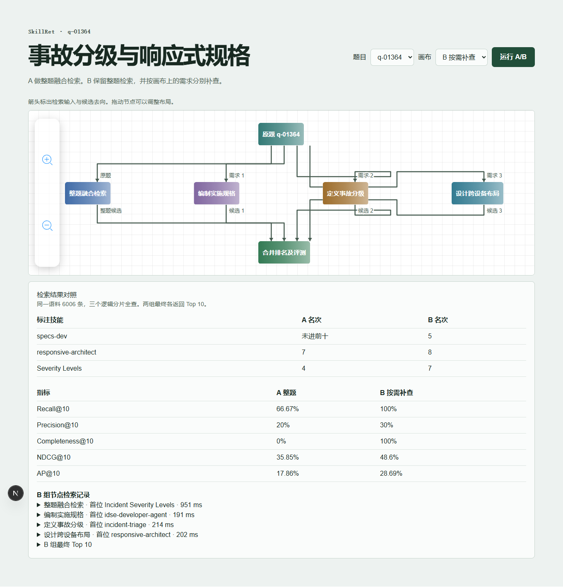

q-01364 事故分级与响应式规格
specs-dev 在规格分支排第 2，最终排第 5。原先命中的两条技能都留在前十，标注技能全部找齐。
A/B 指标
| 指标 | A 整题 | B 按需求补查 |
|---|
| Recall@10 | 66.67% | 100.00% |
| Precision@10 | 20.00% | 30.00% |
| Completeness@10 | 0.00% | 100.00% |
| NDCG@10 | 35.85% | 48.60% |
| AP@10 | 17.86% | 28.69% |
数据集标注技能的名次
| 标注技能 | A | B |
|---|
| specs-dev | 未进前十 | 5 |
| responsive-architect | 7 | 8 |
| Severity Levels | 4 | 7 |
原题与 B 组各节点
整题融合检索
Our platform "FieldRelay" is a React + Node.js incident management dashboard used by on-call SRE teams at logistics companies — they pull it up on phones, tablets, and war-room TVs during outages. We need to add a new "Severity Classification" feature: when an incident is created, the user picks from SEV1 through SEV5 using a guided wizard that walks them through impact questions (customer-facing downtime, data loss risk, blast radius, revenue impact per minute, etc.) and auto-suggests a severity level with required response SLAs, escalation chains, and communication templates for each level. The wizard and the resulting incident cards need to work flawlessly across devices — right now our layout completely breaks below 768px, the touch targets on the severity selector are way too small on mobile, and the real-time incident ticker on the war-room TV view doesn't scale to ultra-wide displays. I want you to plan this out spec-first: draft a detailed implementation spec covering the severity classification logic (all five levels with clear definitions, response time requirements, escalation rules, and when to upgrade/downgrade), the responsive redesign using a proper breakpoint system with container queries for the incident cards, fluid typography so the war-room view is readable from across the room, and accessible touch targets for the mobile on-call experience. Then walk me through it for review before we start building anything — I want to approve the spec, review each implementation phase, and make sure we get clean atomic commits at each stage.
- Incident Severity Levels
- incident-triage
- incident-responder
- Severity Levels
- incident-response-plan
- runbook-creation
- responsive-architect
- Escalation and Ownership
- responsive-helper
- alert-optimizer
编制实施规格
Plan spec-first implementation of a guided incident severity wizard with a review checkpoint, testable acceptance criteria, incremental implementation stages and atomic changes.
- idse-developer-agent
- specs-dev
- incident-response-plan
- plan-implementation
- Incident Severity Levels
- plan-reviewer
- sdd-methodology
- obsidian-spec-to-implementation
- Write Plan Skill
- Severity Levels
定义事故分级
Define SEV1 through SEV5 using downtime, data loss, blast radius and business impact. Specify SLAs, escalation chains, communications and criteria to raise or lower severity.
- incident-triage
- Incident Severity Levels
- incident-responder
- reliability-engineering
- Severity Levels
- launch-tiering
- escalation-framework
- business-analyst
- vulnerability-assessor
- war-room-ops
设计跨设备布局
Design responsive wizard and incident cards for phones, tablets and war-room TVs. Use breakpoints, container queries, fluid type and accessible mobile touch targets.
- responsive-architect
- responsive-helper
- responsive-design
- tailwindcss
- flutter-adaptive-ui
- ui-designer
- tailwind-ui-patterns
- incident-response-plan
- incident-triage
- ui-designer
最终候选
A Top 10
- Incident Severity Levels
- incident-triage
- incident-responder
- Severity Levels
- incident-response-plan
- runbook-creation
- responsive-architect
- Escalation and Ownership
- responsive-helper
- alert-optimizer
B Top 10
- Incident Severity Levels
- incident-triage
- incident-responder
- idse-developer-agent
- specs-dev
- reliability-engineering
- Severity Levels
- responsive-architect
- responsive-helper
- incident-response-plan
RSI 实测截图
